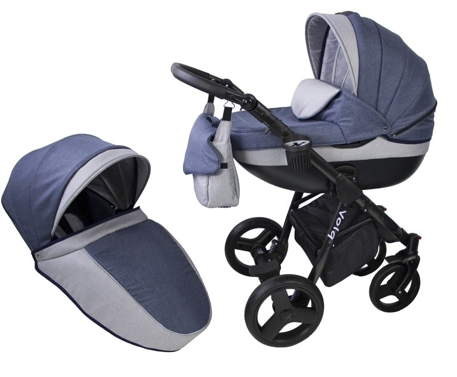
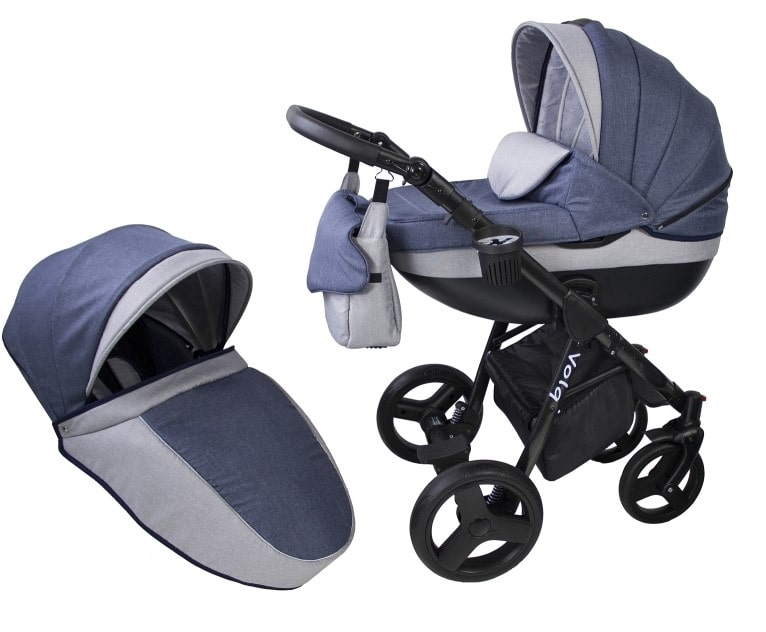

Vilken barnvagn som passar dig beror helt på ditt och ditt barns behov, era
användningsområden
och preferenser. När ditt barn är nyfött och innan hen kan sitta upp så passar en vagn med
liggläge. När hen lärt sig sitta upp så rekommenderas att byta till en med sittläge. Det
finns
två grundalternativ, antingen kan du börja med en enklare liggvagn för att byta till en
rejälare
sittvagn alternativt en lättare sulky, som även passar bra vid resan. Eller så väljer du en
2 i
1 vagn, antingen en praktisk duovagn med utbytbara sitt- och liggdelar eller en funktionell
kombivagn där ryggen kan fällas ner och användas med en mjuklift.
Önskar du en vagn för jämngamla syskon eller tvillingar? Då passar en syskonvagn, med olika
sätesplaceringar och kombinationsmöjligheter.
Är du aktiv och behöver en vagn anpassad för tex. cykling, joggning eller skidåkning? Då är
en
aktivitetsvagn rätt för dig, som kommer i flertalet modeller.
Lycka till med shoppingen! Och kom ihåg: Har du fortfarande frågor i samband med
barnvagnsköpet
finner du en mängd nyttig information i vår utförliga Barnvagnsguide. Här kan du läsa om
allt
från barnvagnstypernas fördelar och nackdelar till detaljerad information om allt du behöver
tänka på innan du köper din barnvagn.
 
